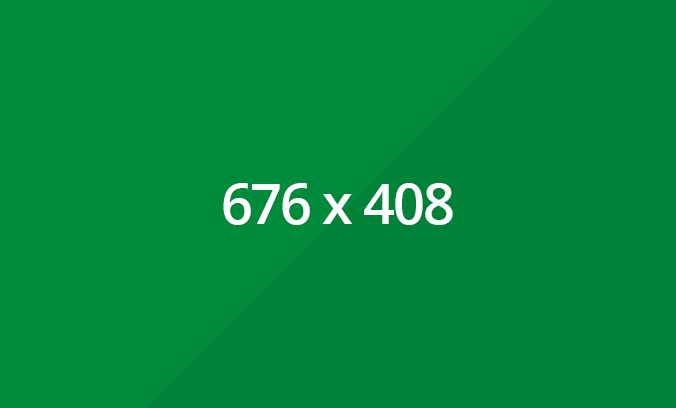

是一个极简的jekyll主题，虽然github提供了github-pages服务，但是搭建博客以及样式还是得自己定制，由于别人做的主题总是有不满意的地方，所以我做了这个 主题，基本还原github的markdown语法，完全兼容中文。
一级标题
二级标题
三级标题
四级标题
五级标题
六级标题
段落
先帝创业未半而中道崩殂，今天下三分，益州疲弊，此诚危急存亡之秋也。然侍卫之臣不懈于内， 忠志之士忘身于外者，盖追先帝之殊遇，欲报之于陛下也。诚宜开张圣听，以光先帝遗德， 恢弘志士之气，不宜妄自菲薄，引喻失义，以塞忠谏之路也。
代码高亮
#include <iostream>
using namespace std;
int main(){
cout<<"hello world!";
return 0;
}
//这是一段很长的注释，人生难免起起伏伏伏伏伏伏伏伏伏伏伏伏伏伏伏伏伏伏伏伏伏伏伏伏伏伏伏
各种字体
- 粗体
- 意大利斜体
删除线颜色标记- 链接
引用
金钱可以购买时间 - 鲁迅
表格
| 名字 | 语文 | 数学 | 数学 | 数学 |
|---|---|---|---|---|
| 张人三人三 | 20 | 80 | 80 | 80 |
| 李档人四 | 80 | 20 | 20 | 20 |
| 小花 | 100 | 100 | 100 | 100 |
图片

无序列表
- 无
- 序
- 列
- 表
有序列表
- 有
- 序
- 列
- 表
外部代码
可以通过社交网站的外链提供视频或者图片等服务，例如以下的视频
Sojourn A visual Proverb from Jonathan Aubrie Lewis on Vimeo.
当然也可以插入音乐(更改歌曲的ID）
内联html标签
markdown支持任何html语法
水平线
数学公式
\[x = {-b \pm \sqrt{b^2-4ac} \over 2a}.\]参考资料
更多关于markdown的语法资料可以在以下链接找到: